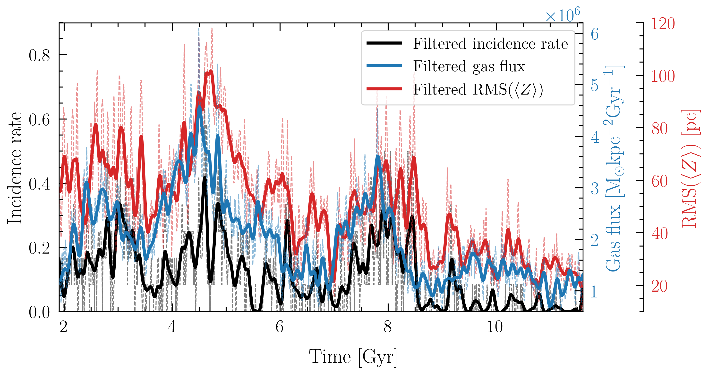
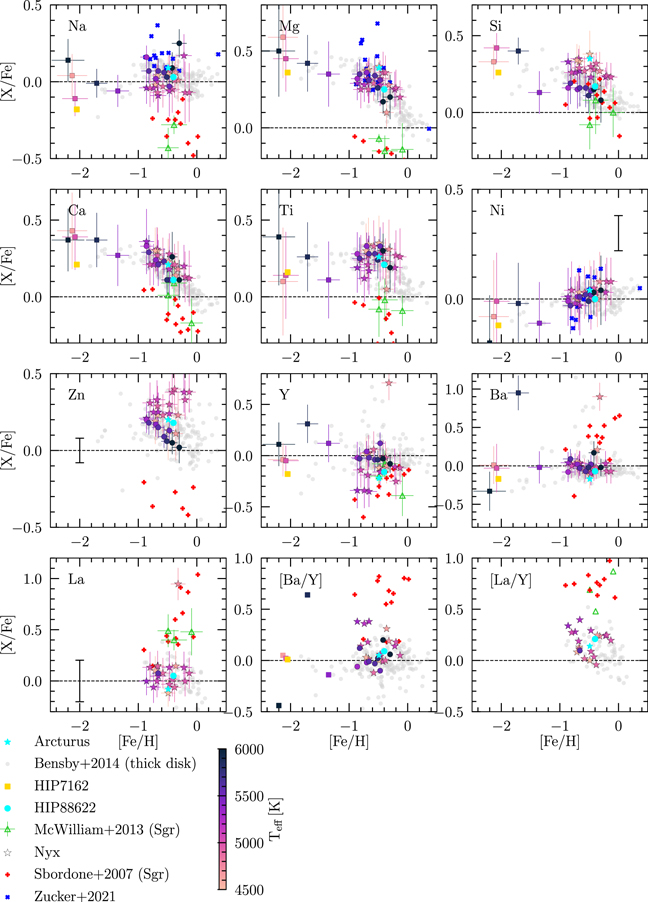

- Milky Way dynamics
- Galaxy interactions
- Galactic archaeology
About Me
I am Shuyu Wang （汪书玉）, a PhD candidate at Leiden University working with Anthony Brown. I am interested in the dynamics and evolution of our own galaxy, the Milky Way. My current work involves understanding the origin of the phase space spiral --- a signature of past disequilibria in the Milky Way disk. I use N-body SPH simulations of a warped galaxy to hunt for and analyze warp-induced phase spirals. My work also extends to the Milky Way's massive neighbors, the Magellanic Clouds (MCs). I'm particularly interested in the complex morphology and kinematics of the Large Magellanic Cloud (LMC). I use Gaia observations as a comparison.
I am an Early Stage Researcher of the Milky Way Gaia Doctoral Network (MWGaiaDN), a Horizon Europe Marie Skłodowska-Curie Actions Doctoral Network funded under grant agreement no. 101072454.
My earlier work focuses on galactic archaeology, where I deduce the history of Milky Way stream stars based on their chemistry and kinematics.
Research

Phase spirals induced by the gas warp
Time evolution of the phase spiral incidence rate compared with the gas inflow and the bending wave amplitude in the warped simulation.

High resolution chemical abundances of the Nyx stream
Chemical abundances of the Nyx stars.
Publications
2026
2023
Talks & Posters
Jun 2026
Poster at the European Astronomical Society Meeting, Lausanne.
Jun 2026
Poster at the Galactic bars, bulges and disks, Lipari.
Apr 2026
Contributed talk at the Nederlandse Astronomen Conferentie, Egmond aan Zee.
Aug 2025
Short presentation at Winding, unwinding and rewinding the Gaia phase spiral workshop, Leiden.
Beyond astronomy
Beyond astronomy, I enjoy watching and performing musicals, cooking, and traveling. My favorite is the 1970s French musical "Starmania". I love sci-fi and fantasy movies, and am a Lord of the Rings fanatic.
My hometown is Huangshan city, home to the UNESCO world heritage sites Huangshan mountain (or Yellow Mountain 黄山, Xidi 西递 and Hongcun 宏村).
The audience at one of our performances at the Trianon Theater in Leiden.
The beautiful scenery of Huangshan mountain (photo taken by Shiyang Z).
Contact
Leiden University
Einsteinweg 55, 2333 CC Leiden
Leiden, The Netherlands